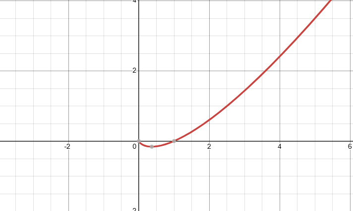

선행
KL Divergence
KL Divergence가 $Q(x)$가 0인 지점에서 $P(x)$를 평가하려고 할 때 값이 폭주한다.
여기서 $P$와 $Q$가 정의된 공간 $\mathcal{X}$에서, JSD는 두 분포의 평균 분포 $M$을 매개로 정의된다.
$P(x)$가 0보다 크거나, $Q(x)$가 0보다 크면, $M(x)$는 반드시 $\frac{1}{2}P(x)$ 또는 $\frac{1}{2}Q(x)$만큼의 값을 가지기에
$D_{KL}(P \parallel M)$를 계산 할 때, $\infty$에 발산하지 않는다.
모든 $x \in \mathcal{X}$에 대해 $M(x) = \frac{P(x) + Q(x)}{2}$이며,
이는 $P$와 $Q$의 산술 평균으로 구성된 새로운 확률 밀도 함수이다.
즉, $Q(x)$가 0이든 아니든 $\frac{P(x)}{M(x)}$의 값은 절대 2를 넘지 못한다.
JSD는 $P$에서 $M$으로의 KL Divergence와 $Q$에서 $M$으로의 KL Divergence를 구한 뒤
그 평균값을 취하는 구조이다.
수학에서 거리 즉 Distance라고 하려면 대칭성이 있어야 한다. ($A \to B$ = $B \to A$)
$D_{KL}(P \parallel Q)$와 $D_{KL}(Q \parallel P)$는 서로 다르기에 기준에 따라 거리가 변하기에 거리라 할 수 없다.
JSD는 $JSD(P \parallel Q) = JSD(Q \parallel P)$이기에 P와 Q를 바꾸어도 동일하여 거리로 사용 할 수 있다.
앞서 말했듯이 수학에서 거리의 필수 조건중 하나인 대칭성을 만족한다.
KL Divergence는 이 성질을 만족하지 못하므로 거리가 아닌 정보 손실량을 의미한다.
이는 모델 A가 실제 데이터에 얼마나 유사한가? 라는 질문에
$D_{KL}(P \parallel A)$ ,$D_{KL}(A \parallel P)$라는 2가지 답이 존재하게 된다는 의미이다.
즉, 기준에 따라 순위가 변할 수 있기에 신뢰 할 수 없는 지표가 된다.
이에 반해 거리는 대칭적으로 하나의 답만 내놓으므로 기준이 바뀌어도 비교를 할 수 있다.
또, 비대칭적인 지표는 위치와 방향에 따라 기울기가 급격하게 변하는 반면,
대칭적인 거리는 확률 공간 내에서 균형잡긴 기울기를 제공한다.
( $P$가 $Q$로 갈 때 기울기와 $Q$가 $P$로 갈 때 기울기가 다르면,
가중치가 튀거나 멈추는 현상이 발생한다. )
KL은 두 분포가 조금만 어긋나도 값이 무한대($\infty$)로 발산하여 수치적 불안정성을 초래하지만,
JSD는 값이 항상 일정한 범위 안에 갇혀 있다.

즉, JSD값의 범위가 고정되어 있으므로, 발산되지 않는다.
그리고 $Q(x)=0$일 때, 무한대로 발산하지 않으므로 특이점 문제가 발생하지 않는다.
$\frac{1}{2} \sum_{x} P(x) \log P(x)$는 $x \log x$꼴을 띄며, 이는 엔트로피의 수식에 음의 부호를 곱해준 것과 같다.
$-\frac{1}{2} \sum_{x} P(x) \log M(x)$는 $P$와 평균 분포 $M$ 사이의 교차 엔트로피 성분을 나타낸다.
즉,
$\frac{1}{2} D_{KL}(P \parallel M) = \text{const} \cdot \left( \text{Entropy} + \text{Cross Entropy} \right)$
엔트로피의 안정성을 그대로 들고오며, 교차 엔트로피의 비교능력과 $x \log(x)$의 특성
거리의 특성을 모두 가지게 된다.